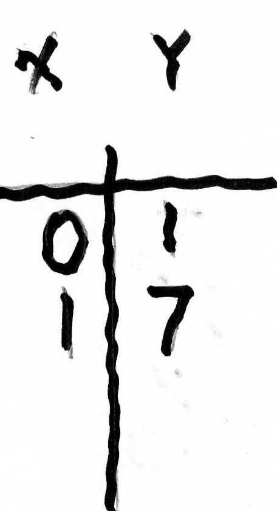
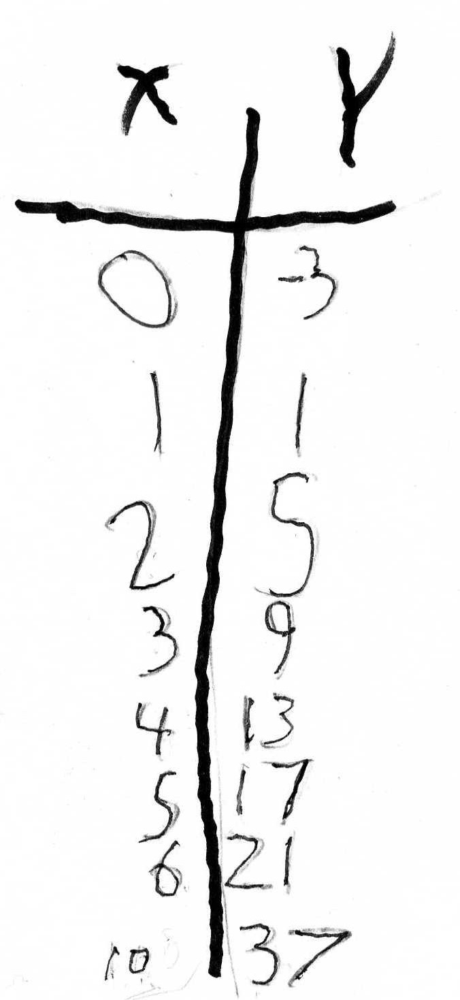

Functions-Guess My Rule /chapter 6
Functions
involve
algebra (by
writing a rule or equation using mathematical symbols), arithmetic
(using number pairs to make true statements), and
The importance of guessing
Don saw a videotape
of Nobel prize-winning Physicist Richard Feynman's lecture about making up a
theory. He said the first thing one needs to do is GUESS
what it should be. His students
giggled at this, but it was very important he said. Then one had to test the
quess, do some experiments, and if it didn't work throw it away! So when Don has
his students guessing to solve equations, he feels confident that he is going in
the right direction.
Besides Feynman
telling us, guessing
is very important, for at least 5 reasons:
1) you start off
right away.
2) it gets you into
the problem, you don't have to have this "I haven't been taught this, so I
can't do it " attitude and then feel you have to wait for someone to tell
you how to solve it.
3) you can solve
many equations this way, not a trivial few, as well as solving other types of
problems. Don't be discouraged if you guess wrong the first few times; keep
trying, you can do it. Along with guessing goes the question-are you getting
closer? Is the guess too big or too small?
4) you'll also get
better at guessing. And
5) you might even come up with different ways to solve the same problem, which would be very good. Then you would have a check to tell you if you are right or not, like when taking a test, and without having to rely on someone else to tell you.
GUESS MY RULE (see chapter 6)- W.W. Sawyer, who just died recently at age 97, was a fine teacher and mathematician (see Mathematicians Delight; Pelican Books). Many mathematical ideas Don works on with children come from Sawyer and Bob Davis (The Madison Project- see Discovery in Mathematics+).
Don asked Anna, a 4th grader, if she would like to play Guess My Rule. She said she had done these before, so he gave her one he thought was hard. He wrote the rule on the back of a 3x5" blank card. She gave him 3, the machine gave back 12, she gave him 6, the machine gave back 39. After just 2 pairs of numbers, she figured out the rule to be x2 + 3 !
(front of 3"x5" card)
(back of 3"x5" card)
Don asked Anna to make one for him to figure out ("don't make it too hard for the old man"):
(front of 3"x5" card)


(back of 3"x5" card)
Don got her rule and when they looked at her written rule on the back of the card above, he suggested she not use an x in writing the multiplication sign, 6xX+1, but write just 6x+1=y or use a dot for the multiplication sign, as in 6.x+1=y
Jack (of 'Jack's math' fame), was in this session and was listening to Don and Anna, so Don asked Anna to make a rule for Jack to figure out:
(front of 3"x5" card)

Jack found a pattern in the y-numbers, they go up 4 each time. That was correct, is important and is called a recursive rule, to get from one y to the next. Don said that 4 was an important number in the rule -which Jack later proved Don wrong in what he did! Then Don asked Jack if he put in 100 for the input number, what would the machine give him back . He was stumped by this, so Don suggested he find what happens to the x-number/input-number to get the y-number/output-number. He really looked at the numbers. He noticed that for 4, 3x3 + 4 = 13, and for 5, 4x3 + 5 = 17. Don never expected that! Both Don and Anna listened carefully to what Jack was saying, but he couldn't write the rule. Don had Jack's rule, but he asked Anna to write the rule that Jack was describing. Anna first wrote x-1. 3 + x = y. Don suggested she needed parentheses around the x-1, because they would have to multiply 1 times 3 before subtracting from x (the order of operations). Anna had written her rule on the back of the card and wrote the rule for Jack's way of doing it.
(back of 3"x5" card)

Don didn't think of it then, but would wait for their next session to have them show algebraically that both written rules were equivalent.
4 months later Don asked Anna to make up another rule for him: the first 3 pairs were (0,1), (1,0), and (2,1). Don responded that another pair would be (3,4), she said yes, and Don told her the rule was y= (x-1)2 . Anna took a moment to say my rule worked and she had written x2 - 2x +1. If you look at Anna's earlier work, this was part of a problem in which she found the distance between 3 points. Check out what she did then at the bottom of this file.
One week later while Don was working with Jack, he looked over at Ann. She took a 3x5" card and Don said, aha, "I see the evil eyes of Anna, You must be about to make up a nasty rule for me, right?" "Yes, she smiled!" Here is the card as Don wrote down her numbers:

Don worked on this for about 2 hours. Jerry, a 5th grader, came in and figured it out in about 20 minutes- and found only one mistake (-1,2) in Anna's rule! Can you do it. (hint: Anna told Don that it is an exponential function).
At the same time Anna gave Don the rule above, Jack, in 3rd grade, made up the following rule for him: This time Don gave him 0, Jack said 7 and then (1,7.75) and (2, 8.5). At this time Don said he knew Jack's rule and Don wrote x +7= y. Jack had written x4x 3+7=y. Jack asked Don.."how did you get that"? Don explained to Jack that he went up in the y's the same amount (.75 = 3/4) each time, so it was a linear function- the form is mx + b = y, a straight line when graphed. And the 0 goes to 7, which is the y-intercept (b, where the graph crosses the y-axis). His rule was was then x +7= y (these programs to write fractions Don uses can't seem to get to go on the line of type). Jack's rule was x4x 3+7=y, and Don told him x4x 3 is the same as x . The following week Don got Jack to graph his rule:
Don used money 3 quarters = 75 cents = $.75 = 3/4..The combination of the 3/4 and .75 helped him graph the numbers and see the pattern of a straight line that goes up 3/4 each time.
Natalie figure out a rule for the triangular numbers and graphs it
Sheri figures out the rule for the Tower Puzzle (an exponential function) and graphs it
Michael figures out a rule for the hinged mirrors, graphs it and makes the diagram for the rays going from the object bouncing off the mirrors to the eye
Nanako found the rule for the surface area of the rods SA = 4xL + 2 and the ratio of SA/Vol = 4 + 2/L which is an infinite sequence which has a limit
Kelda figures out the rule for the graph of length vs area of rectangles with perimeter of 20
Maya graphs the length vs. perimeter of rectangles with an area of 36, Don figures out the rule.
Maggie- a 7th grader, Patricia- a 9th grader, and Paul-a 6th grader figure out a rule to find the area (y) within a shape on a geoboard, given the number of nails (x) touching the rubber band and (i) the number of nails inside the shape, not touching the rubber band
Don finds a rule to get the frequency of a note on the piano using the equal tempered scale
Vickie finds a rule relating the length of a Nautilus chamber to its area
Vickie found the volume of a Nautilus chamber increases 6.9% to get the next one.
Don shows SOHCAHTOA for 3 trig functions.
Don shows one picture to get the 6 trig functions
See the great IES applet that shows the 6 trig functions
Andrew, age 7, figured out a rule for the number of 1x1x1 cm cubes in each layer of a pyramid (which Don and his grandson made), starting with 4, then 16, 36, 64.. Tuesday March 12 when he came from Idaho
Don found the equation of the 2 ellipses which Joe found with angle of 120o between the bubbles
Don shows how he found the rule for the sum of the first x square numbers (without Mathematica), which Sheri came across in finding the ratio of the volume of a pyramid to the volume of a cube

Problems with functions from Don's Worksheet book and answers
See Don's page with lots more functions.